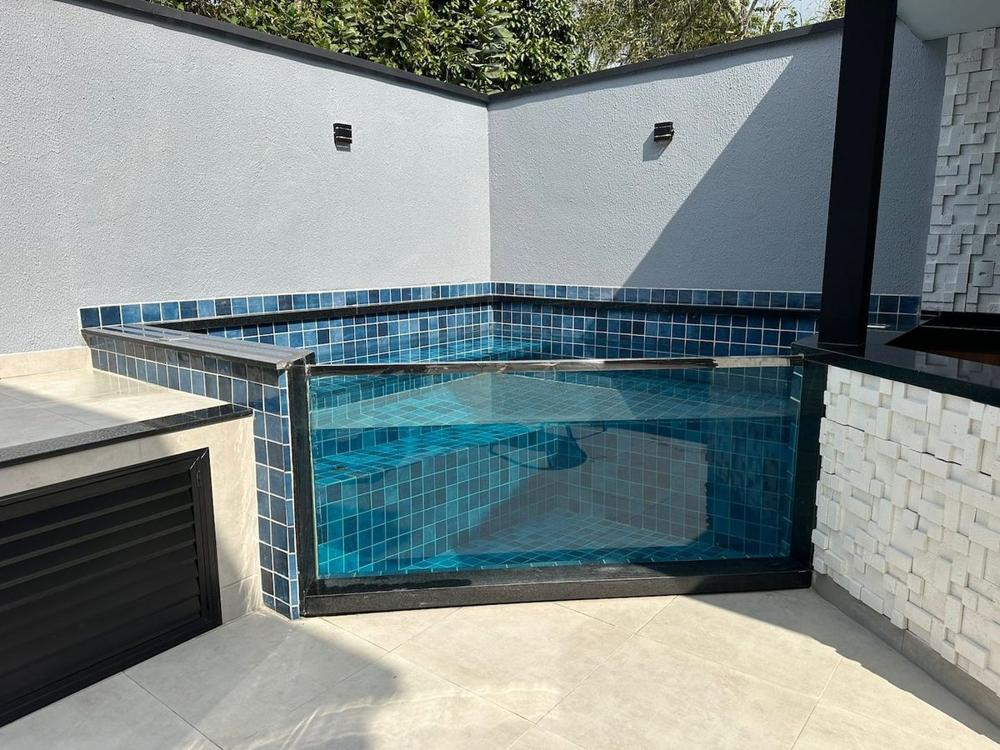

Aproveite sua estadia
Nada encontrado. Tente outra palavra.
No iPhone, toque em Compartilhar e depois em “Adicionar à Tela de Início”. No Android, abra o menu do navegador e escolha “Adicionar à tela inicial”.
Portal do Corumbê · Paraty